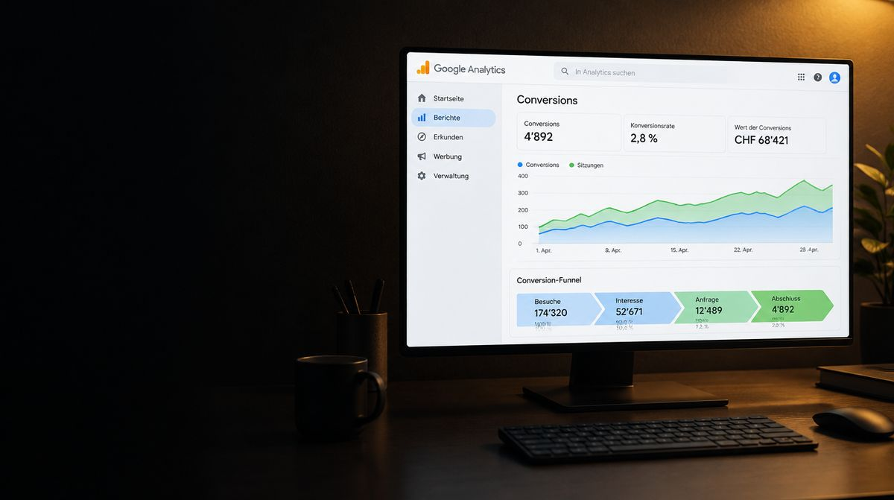

Votre site doit atteindre les personnes qui recherchent vos prestations. Nous associons audit technique, contenus compréhensibles et analyse continue. Sous forme de projet SEO délimité ou de soutien spécialisé dans le marketing par abonnement. Depuis Pratteln, pour les entreprises de la région bâloise, d’Argovie et de toute la Suisse alémanique.
Où votre site perd-il des prospects pertinents ?
Une prestation importante n’est mentionnée que sur une page de synthèse. Un bon guide ne mène nulle part vers l’offre correspondante. Ou une page centrale ne peut pas être correctement explorée par les moteurs de recherche. Des problèmes aussi différents demandent des mesures différentes. C’est pourquoi la collaboration commence par un état des lieux.
Nous examinons vos offres, vos pages existantes et les données de recherche disponibles. Quelles questions les clients se posent-ils avant une demande ? Quels contenus y répondent déjà ? Où manque-t-il une explication utile ? Il en ressort une liste de tâches priorisée, avec responsabilités et résultats vérifiables.
Que comprend le travail SEO ?
- Base technique
- Vérifier l’accessibilité, l’indexation, les adresses de pages, les redirections et les liens internes. S’y ajoutent les titres de page, les descriptions et les données structurées qui correspondent au contenu visible. Nous définissons quelles corrections nous effectuons nous-mêmes et lesquelles votre équipe de développement prend en charge.
- Requêtes et arborescence
- Attribuer les questions pertinentes aux bonnes pages. Une page de prestation aide à choisir un prestataire ; un guide explique une décision. Nous planifions leur lien, afin que les visiteurs passent du sujet à l’étape suivante adaptée.
- Des contenus issus de votre expertise
- Décrire les prestations de façon compréhensible, répondre aux questions ouvertes et retravailler les contenus existants. Votre équipe fournit les bases métier et vérifie les affirmations. Nous apportons recherche, structure, texte et la mise en œuvre convenue.
- Analyse et prochaines étapes
- Comparer les requêtes, impressions et clics avec les pages travaillées. Dans la mesure où c’est mesurable, s’y ajoutent les demandes pertinentes et les retours de l’équipe de vente. Le rapport consigne ce qui a été réalisé, ce qui reste ouvert et quelle décision en découle.
Audit ponctuel ou suivi continu ?
Un audit SEO est un projet délimité. Son résultat devrait être un état des lieux compréhensible avec des mesures priorisées. La correction des problèmes identifiés n’en fait partie que si elle est expressément incluse dans le mandat.
Le suivi continu dans le marketing par abonnement comprend la mise en œuvre et l’analyse convenues. Par exemple, une page de prestation importante est retravaillée, validée sur le fond, puis observée à l’aide des données disponibles. Un nouveau contenu s’ajoute lorsqu’il répond à une question ouverte concrète. Un simple nombre de pages supplémentaires ne constitue pas encore un objectif de travail pertinent.
Vous avez une équipe marketing ou un partenaire web ?
Nous nous intégrons alors à vos processus existants. Votre marketing peut garder la responsabilité des thèmes, du positionnement et des validations. Nous prenons en charge le travail SEO convenu et formulons les tâches techniques de façon que votre partenaire web puisse les mettre en œuvre et les vérifier. Qui publie, qui gère les accès et qui réceptionne les résultats est clarifié dès le départ.
Pour une refonte complète du site, nous associons le SEO au projet de création de site web. La check-list de refonte aide à tenir compte des adresses et contenus existants lors du changement.
Pour que les assistants IA comme ChatGPT, Perplexity et Gemini vous trouvent et vous recommandent aussi, il faut des informations d’entreprise univoques, des contenus citables et des mentions en dehors du site. Le guide Être trouvé dans ChatGPT explique comment tout cela s’articule.
Pour la recherche sur la carte et les demandes de la région, c’est le profil d’établissement Google qui compte. Le guide Configurer son profil d’établissement Google décrit la marche à suivre, de la configuration jusqu’aux avis.
Et la visibilité dans les réponses de l’IA ?
Là aussi, des informations claires et solides sur le fond ainsi qu’un site accessible sont au centre. Selon Google, les exigences SEO fondamentales s’appliquent aux aperçus IA et au mode IA ; des fichiers IA spécifiques ou un schéma particulier ne sont pas nécessaires. Une mention ne peut pas être garantie. Source : Google Search Central sur les fonctionnalités d’IA.
À quoi reconnaissez-vous les progrès ?
Nous distinguons le travail effectué de son effet : une redirection corrigée est un résultat de travail vérifiable. Davantage de visites de recherche pertinentes ou de demandes sont des effets qui doivent d’abord apparaître dans les données. Quelques positions sur un petit nombre de mots-clés ne suffisent donc pas à donner une vue d’ensemble.
Les comparaisons ont besoin de contexte : une page a-t-elle été republiée ? L’offre a-t-elle changé ? La demande est-elle saisonnière ? Et le volume de données suffit-il déjà pour décider ? Ces questions font partie de l’analyse, afin qu’un pic de courte durée ne mène pas à une mauvaise conclusion.
Questions fréquentes sur le suivi SEO.
Une question en suspens ? Écrivez-nous. Nous répondons généralement le jour ouvrable même.
Cela dépend de la situation de départ, des modifications et du nouveau traitement par le moteur de recherche. Google évoque des délais possibles de quelques heures à plusieurs mois. Nous convenons de tâches vérifiables et de dates d’analyse ; nous ne pouvons pas promettre de date fixe pour un classement. Source : guide de démarrage SEO de Google.
Pas forcément. L’état des lieux montre ce qui peut être amélioré dans le système existant. Une refonte devient un projet à part entière lorsque la structure, les fonctions ou des limites techniques exigent des changements plus importants.
Le SEO vise la visibilité et les visites de recherche pertinentes. La maintenance de site web s’occupe de la gestion convenue, des contrôles de fonctionnement et de l’évolution du site. Les tâches peuvent se compléter, mais leur périmètre est défini séparément.